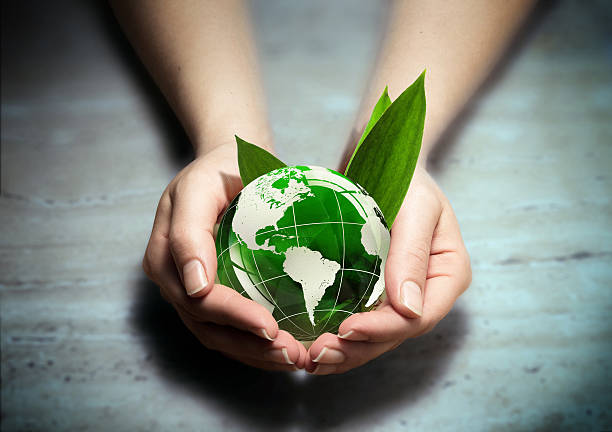
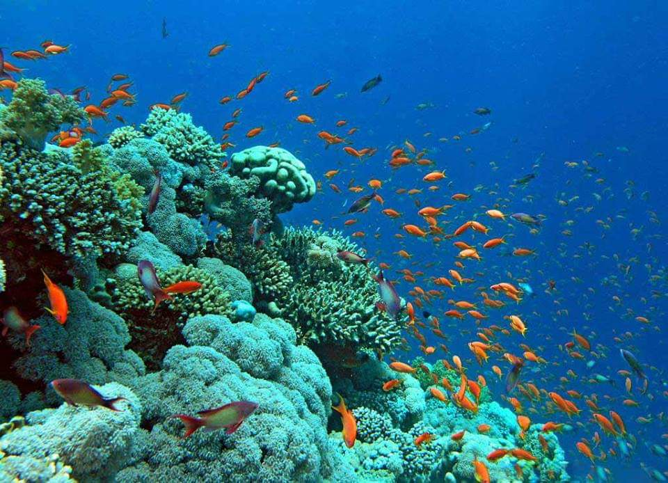
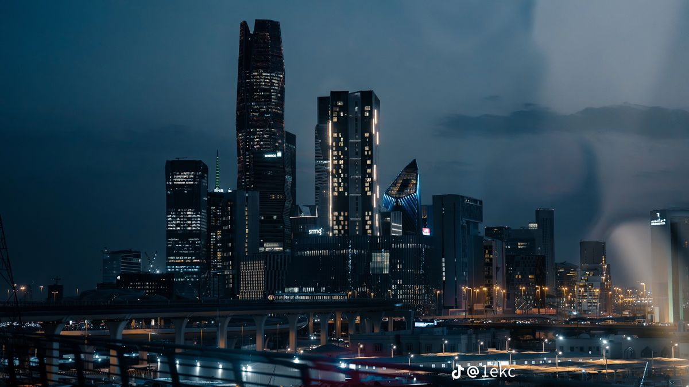

Saudi Green Life
Small Actions, Greener Future.
Discover Saudi Arabia's natural beauty and join the journey toward a sustainable future.
Explore Saudi Nature
Discover Saudi Arabia's natural beauty and join the journey toward a sustainable future.
Explore Saudi Nature
Saudi Green Horizons highlights the beautiful and varied natural environments of Saudi Arabia and shows how national environmental initiatives protect them. Use the menu to jump to each horizon.

The Red Sea and the Arabian Gulf hold some of the world's healthiest coral reefs, mangroves, turtles and dolphins. Protection efforts include marine reserves, mangrove planting, limits on plastic waste and sustainable coastal tourism.

Deserts such as the Empty Quarter and the Nafud cover much of the Kingdom. They shelter the Arabian oryx, gazelles and rare plants. National programs restore degraded land, fight desertification and reintroduce native species into protected reserves.
.jpg)
The Sarawat and Asir mountains enjoy cooler weather, rainfall and rich forests of juniper and wild olive. Protection includes national parks, terraced farming heritage, reforestation and controlled tourism that keeps habitats safe.

Cities such as Riyadh are becoming greener through large urban parks, tree-lined streets, public transport, waste recycling and efficient buildings. These projects improve air quality and make cities better places to live.